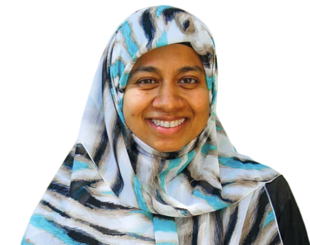

Frontend · about/sultana-afrooz.html
Sticky photo card + biography. Also used on homepage doctor cards.
Profile card
doctor-card-sticky

Replace profile portrait

Frontend · about/sultana-afrooz.html
Sticky photo card + biography. Also used on homepage doctor cards.
doctor-card-sticky

Replace profile portrait